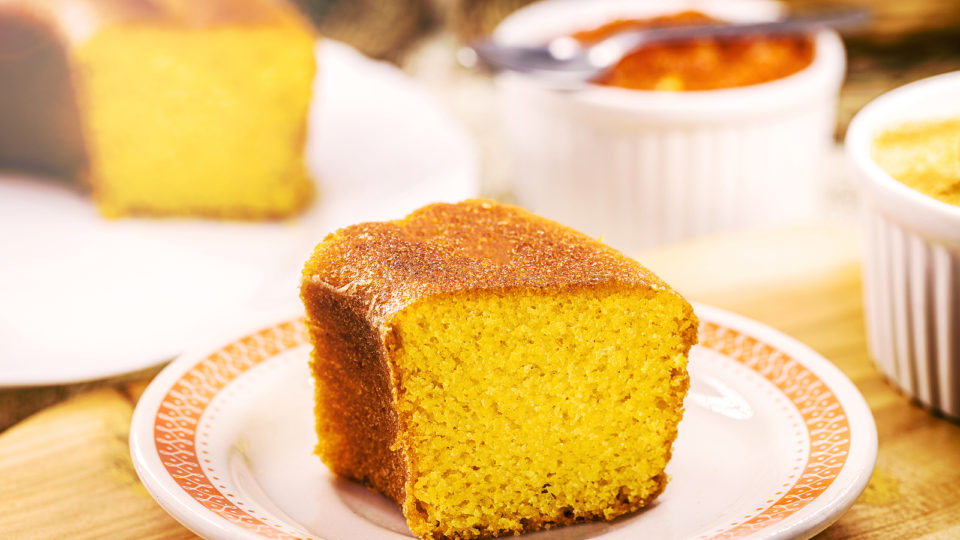

Bolo fofo
- 3 ovos
- 1 e 1/2 xícaras de açúcar
- 2 xícaras de farinha de trigo
- 1 xícara de leite
- 1/2 xícara de óleo
- 1 colher de sopa de fermento em pó
- 1 pitada de sal
-
Preaqueça o forno a 180°C e unte uma forma com manteiga e farinha de
trigo.
-
Em uma tigela grande, bata os ovos com o açúcar até obter uma
mistura clara e fofa.
- Adicione o leite e o óleo e misture bem.
-
Peneire a farinha de trigo, o fermento em pó e o sal e adicione à
mistura líquida, mexendo até incorporar bem.
-
Despeje a massa na forma untada e leve ao forno por cerca de 30-40
minutos, ou até que um palito inserido no centro do bolo saia limpo.
- Retire do forno e deixe esfriar antes de servir.